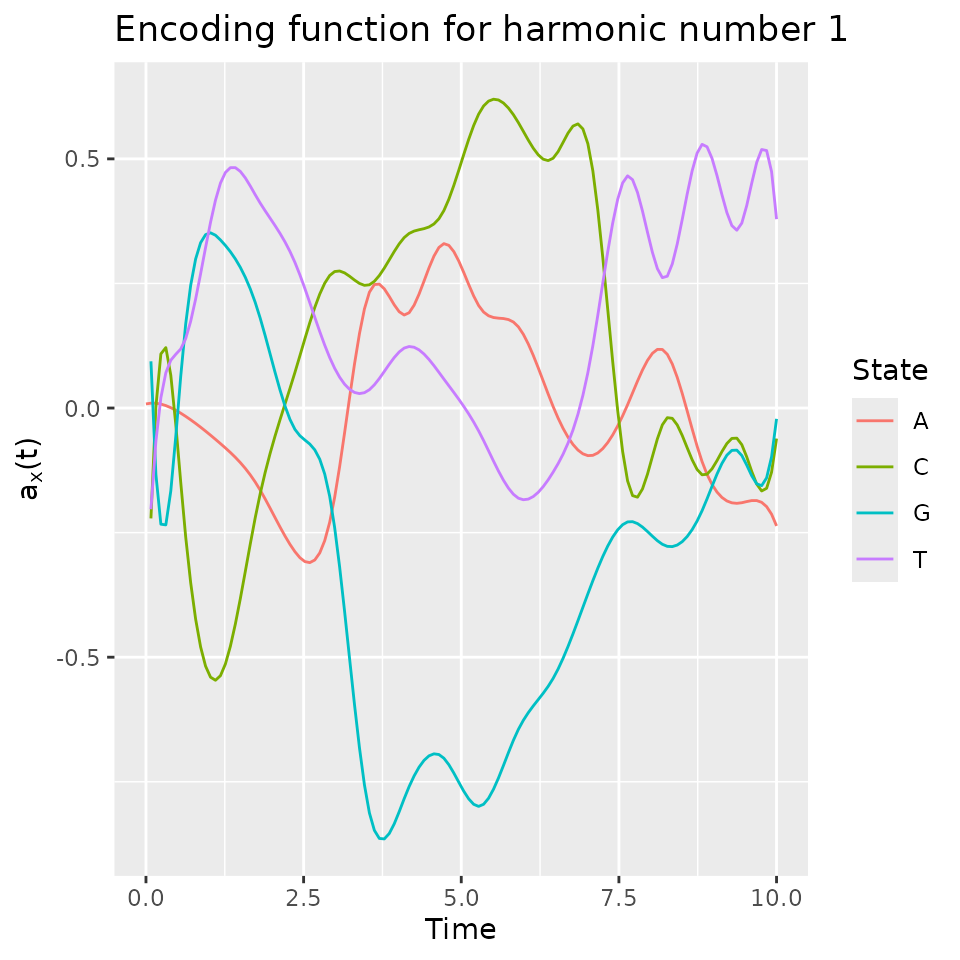

Categorical Functional Data Analysis
Cristian Preda, Quentin Grimonprez
2020-10-06
Source:vignettes/cfda.Rmd
cfda.RmdDataset Simulation
We simulate the Jukes Cantor model of nucleotide replacement.
Denote the set of nucleotides: \(E = \{A, T, G, C\}\). A DNA sequence is seen as a string of nucleotides: ATGCATTAC.
Each in the sequence is subject to mutation over time.
In the Jukes-Cantor model (1969), each site is a Markovian jump process with continuous time having as generator:
\[ Q = \ \ \ \begin{array}{c|cccc} &A&T&G&C \\ \hline A&-3\alpha&\alpha&\alpha&\alpha\\ T&\alpha&-3\alpha&\alpha&\alpha\\ G&\alpha&\alpha&-3\alpha&\alpha\\ C&\alpha&\alpha&\alpha&-3\alpha\\ \hline \end{array}\]
for some \(\alpha >0\).
Let assume that the process is observed over the period \([0,T_{\max}]\) in \(n\) sites with the nucleotide \(A\) at time \(t=0\). In the following, nucleotides are recoded: \(A\leftrightarrow 1\), \(T\leftrightarrow 2\), \(G\leftrightarrow 3\), \(C\leftrightarrow 4\).
K <- 4 PJK <- matrix(1/3, ncol = K, nrow = K) - diag(rep(1/3, K)) lambda_PJK = c(1, 1, 1, 1) Tmax <- 10 n <- 100 d_JK <- generate_Markov(n = n, K = 4, P = PJK, lambda = lambda_PJK, Tmax = Tmax, labels = c("A", "C", "G", "T")) head(d_JK, 10)
## id time state
## 1 1 0.0000000 A
## 2 1 0.1983368 G
## 3 1 0.2365287 T
## 4 1 1.7001558 G
## 5 1 2.1102854 A
## 6 1 2.5485099 T
## 7 1 3.2633724 G
## 8 1 3.3448084 A
## 9 1 3.4654739 T
## 10 1 4.9614496 CThe dataset is a data.frame with 3 columns: id, time, state. id contains the id of the different individuals (usually integers). time contains the time values at which a change occurs, note that for each individual, time values are ordered and start at 0. state contains the state that appears at the given time, state must be characters, factors, integers. This data format is used by the most part of cfda’s functions.
summary_cfd(d_JK)
## Number of rows: 1082
## Number of individuals: 100
## Time Range: 0 - 9.993531
## Same time start value for all ids: TRUE
## Same time end value for all ids: FALSE
## Number of states: 4
## States:
## A, C, G, T
## Number of individuals visiting each state:
## A C G T
## 100 98 97 92We can compute the duration of each trajectory.
duration <- compute_duration(d_JK) head(duration)
## 1 2 3 4 5 6
## 9.976904 7.812600 8.871661 8.357921 9.650790 9.993531All individuals has a different length. The computation of an optimal encoding requires that the end time of each individual is the same (\(T_{\max}\)), this can be done with the following function:
d_JKT <- cut_data(d_JK, Tmax = Tmax)
Individuals can be plotted:
plotData(d_JKT)

Basic statistics
Generally, in categorical functional data analysis, the following basic statistics are computed.
Time spent in each state over a period of length \(T_{\max}\):
For each individual, the time spent in each of the \(K\) states is computed.
timeSpent <- compute_time_spent(d_JKT) timeSpent[1:10,]
## A C G T
## 1 2.827888 0.7229735 1.929005 4.520133
## 2 3.951755 0.3545537 1.769637 3.924055
## 3 1.958321 1.1951070 6.846572 0.000000
## 4 4.718945 2.0622661 2.005165 1.213624
## 5 3.200914 0.1618662 2.296325 4.340895
## 6 4.214955 1.2124305 2.295326 2.277289
## 7 2.757877 4.3517045 1.038824 1.851595
## 8 3.826478 2.1324087 4.041113 0.000000
## 9 1.687807 2.7519813 1.208147 4.352065
## 10 4.788120 1.2389632 3.972917 0.000000The results can be plotted:
boxplot(timeSpent)

Number of jumps in \([0,T_{\max}]\):
For each individual, the number of jumps occurring in \([0,T_{\max}]\) is computed.
nJump <- compute_number_jumps(d_JK) head(nJump)
## 1 2 3 4 5 6
## 17 9 3 13 10 13The results can be plotted:
hist(nJump)

Probabilities to be in some state \(x\) at time \(t\), \(p_{x}(t)\):
An other interesting statistic is the evolution of the probability to be in each state.
pt_evol <- estimate_pt(d_JKT) pt_evol$pt[1:K, 1:10]
## 0 0.008 0.038 0.039 0.045 0.058 0.058 0.062 0.07 0.078
## A 1 0.99 0.98 0.97 0.96 0.95 0.94 0.93 0.92 0.91
## C 0 0.01 0.01 0.01 0.01 0.01 0.02 0.02 0.03 0.04
## G 0 0.00 0.00 0.01 0.01 0.01 0.01 0.02 0.02 0.02
## T 0 0.00 0.01 0.01 0.02 0.03 0.03 0.03 0.03 0.03head(pt_evol$t)
## [1] 0.000000000 0.007897421 0.038151747 0.038873269 0.044793148 0.058217068The output is a list with two elements: t the different time values and pt a matrix where each row contains the probability to be in a given state for all the time values. The result can be plotted:
plot(pt_evol, ribbon = TRUE)

Transitions in \([0,T_{\max}]\):
The transitions between states can been studied by computing a frequency table counting the number of times each pair of states were observed in successive observation times.
statetable(d_JK)
## to
## from A C G T
## A 0 110 85 105
## C 71 0 84 78
## G 72 65 0 78
## T 86 81 67 0Assuming that the data follows a Markov process, parameters \(P\) (transition probability matrix) and \(\lambda\) of the process can be estimated.
mark <- estimate_Markov(d_JK) mark
## $P
## to
## from A C G T
## A 0.0000000 0.3666667 0.2833333 0.3500000
## C 0.3047210 0.0000000 0.3605150 0.3347639
## G 0.3348837 0.3023256 0.0000000 0.3627907
## T 0.3675214 0.3461538 0.2863248 0.0000000
##
## $lambda
## A C G T
## 1.062606 1.086185 1.079873 1.123472
##
## attr(,"class")
## [1] "Markov"The estimated parameters are closed to the ones used. The results can be plotted through a transition graph where each node corresponds to a state with the mean time spent within (corresponding to \(1/\lambda\)) and arrows correspond to transition probabilities between states.
plot(mark)

Encoding
Concept
\(X\) is a continuous stochastic process with jumps. We define categorical functional data as a set of sample paths of \(X\).
cfda is seen as an extension of the multiple correspondence analysis to a stochastic process.
The idea is to find a scalar real random variable \(z \in L_2(\Omega)\) that is the most correlated to \({X} = \{X_{t}\ : \ t\in [0,T_{\max}]\}\).
Mathematical Background
For a fixed \(t\in [0,T_{\max}]\), let \(E^{t}\) the projection operator, \[E^{t}(z) = \mathbb{E}(z|X_{t}) = \sum_{x\in S}{\mathbb{E}(z|X_t=x) \mathbf{1}_{X_t=x}}\] Then, the correlation coefficient between \(z\) and \(X_{t}\) is: \[\eta^{2}(z, X_{t}) = \frac{var(\mathbb{E}(z|X_{t}))}{var(z)}\]
For \(t, s \in [0,T_{\max}]\), the (simple) correspondence analysis looks for \(z\) such that it maximizes \[\displaystyle\frac{1}{2}\left(\eta^{2}(z, X_{t})+\eta^{2}(z, X_{s})\right)\]
and the solution is:
\[(E^{t}+E^{s})z = \lambda z\] \(z\) is called a principal component.
As an extension, the functional correspondance analysis is defined as the solution of the optimization problem:
\[ \arg\max_{z}\displaystyle\frac{1}{T_{max}}\int_{0}^{T_{max}}\eta^{2}(z, X_{t})dt\] Solution: \[\int_{0}^{T_{max}}E^{s}z\ ds = \lambda z\]
Denote \(\xi_t = E^{t}z\),
\[\int_0^{T_{\max}}K(t,s)\xi_s\ ds = \lambda \xi_t, \ \ \ \ \mbox{with}\ K(s,t) = E^tE^s. \]
It follows that,
\[\xi_{t} = \sum_{x\in S}a_{x}(t)\mathbf{1}_{X_t=x}\] with \(a_x(t) =\mathbb{E}(z|X_t= x), \ \ \forall x \in S\).
For each \(x\in S\), the functions \(a_x: [0,T_{\max}|\rightarrow \mathbb{R}\) are called optimal encoding of the state \(x\).
The eigenvalue problem becomes in terms of encodings:
\[\lambda a_x(t) = \sum_{y\in S}\displaystyle\int_{0}^{T_{\max}}\frac{p_{x,y}(t,s)}{p_x(t)}a_y(s)ds, \ \ \ \ \ \forall x \in S, \forall t\in [0,T_{\max}], \] where\(p_{x,y}(t,s) = \mathbb{P}(X_t=x, X_s=y)\) and \(p_x(t)= \mathbb{P}(X_t=x)\).
Under general conditions (continuity in probability of \(X\)), there exists \(\{\lambda_i\}_{i\geq1}\) positive eigen-values and \(\{a_x^i\}_{i\geq 1}\) eigen-functions.
The folowing expansion formula holds (Mercer thm.):
\[p_{x,y}(t,s) = p_x(t)p_y(s)\sum_{i\geq 1}\lambda_{i}a^i_x(t)a^i_y(s)\] For \(x=y\), one obtains:
\[p_x(t) =\displaystyle\frac{1}{\displaystyle\sum_{i\geq 1}\lambda_{i}a^i_x(t)a^i_y(s)}\]
We are interested in approximating the encoding functions, \(a_x\), by
\[a_{x} \approx \sum_{i=1}^m \alpha_{x,i}\phi_i, \] where \(\mathbf{\alpha_x} = (\alpha_{x,1}, \ldots, \alpha_{x,m}) \in \mathbb{R}^m\) are the expansion coefficients onto a basis of functions defined on \([0,T]\), \(\{\phi_1, \ldots, \phi_m\}\), \(m \geq 1\).
The main result (Deville, 1982) is that \(\alpha = (\alpha_{1}, \ldots, \alpha_{K}) \in \mathbb{R}^{Km}\) is the solution of the following eigen-value problem:
\[F^{-1}G\alpha = \lambda\alpha, \] where \(G\) and \(F\) the matrix defined by: \[G = cov(\{V_{(x,i)}\}_{x\in S; i=1:m }),\] \[F = \mathbb{E}\left(\{F_{(x,i),(y,j)}\}_{x,y\in S ; i,j=1:m}\right)\] with the random variables \(V_{(x,i)}\) and \(F_{(x,i),(x,j)}\) defined by: \[V_{(x,i)} = \int_{0}^{T_{\max}}\phi_i(t)\mathbf{1}_xdt \ \ \ \ \mbox{and}\ \ \ \ F_{(x,i), (y,j)} = \int_{0}^{T_{\max}}\phi_i(t)\phi_{j}(t)\mathbf{1}_x\mathbf{1}_y dt\]
Application
Firstly, a basis of functions must be defined. We choose a B-splines basis of order 4.
m <- 10 b <- create.bspline.basis(c(0, Tmax), nbasis = m, norder = 4)
The optimal encoding is computed using:
fmca <- compute_optimal_encoding(d_JKT, b, nCores = 2, verbose = FALSE)
By default this function computes bootstrap estimates of the encoding functions in order to have a confidence interval. This is controlled by the computeCI arguments. The output is a list containing the different elements computed during the process: eigenvalues, pc, alpha, F, G, V and basisobj. Note that alphacontains the coefficients of the different encoding functions and pcthe principal components. These components can be used with classical statistic methods (k-means, regression…).
The eigenvalues can be computed using:
plotEigenvalues(fmca, cumulative = TRUE)

The first encoding function coefficients \(\alpha\)’s:
print(fmca$alpha[[1]])
## A C G T
## [1,] 0.002527816 0.6581468 -0.32857421 -0.002813819
## [2,] -0.017726679 -0.3705776 0.33158464 -0.025042589
## [3,] -0.225499860 -0.6291487 0.66409074 0.944240906
## [4,] -0.399692155 0.5459657 -0.37122487 -0.182539384
## [5,] 0.351928506 0.1955320 -0.79631965 0.291925346
## [6,] 0.226710987 0.5287919 -0.84743389 -0.085294795
## [7,] -0.152761503 0.3105041 -0.31618292 0.277709736
## [8,] 0.336894982 -0.3244686 -0.48491253 0.661191654
## [9,] -0.473977007 0.1768115 -0.02103771 0.305263785
## [10,] -0.128365002 -0.1472297 -0.19896052 0.515596657The resulting encoding can be plotted:
plot(fmca)
## Warning: Removed 3 row(s) containing missing values (geom_path). or extracted as a fd object (or matrix):
encoding <- get_encoding(fmca, fdObject = TRUE)
By default, it plots (and returns) the first encoding functions. Other encoding can be accessed with the harm argument.
A confidence interval can be plotted using the addCI argument:
plot(fmca, addCI = TRUE, coeff = 2, states = "A")

Plot the two first components:
plotComponent(fmca, comp = c(1, 2), addNames = FALSE)